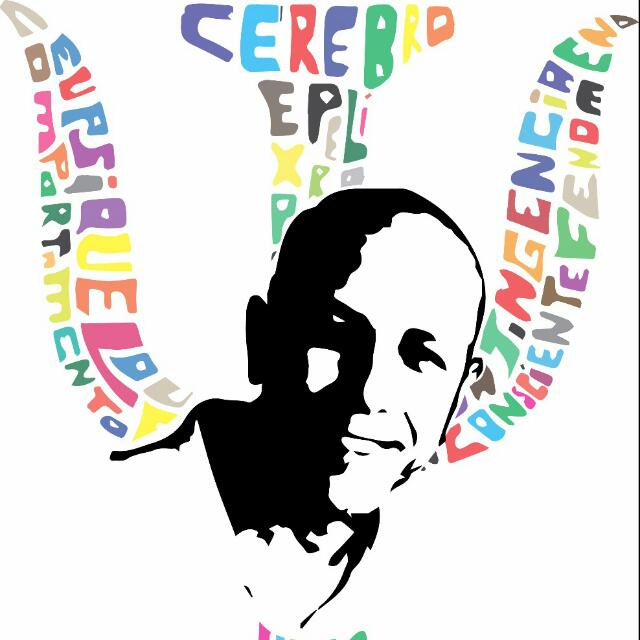

Envie escalas por link, o paciente responde no celular, você recebe o PDF pronto no painel. Simples assim.
52 escalas de rastreio gratuitas · 7 testes de rastreio computadorizados · Painel profissional completo
⚠ Atenção: Ao se cadastrar, o email de verificação pode cair na pasta Spam. Verifique lá e marque como “Não é spam”.
Este site foi construído para facilitar a aplicação de escalas e testes de rastreio cognitivo e comportamental. Todos os instrumentos são de domínio público ou desenvolvidos para rastrear o modo de funcionamento da pessoa avaliada — não substituem diagnóstico clínico.
Qualquer dúvida, entre em contato pelo WhatsApp (67) 98423-3444. Agradeço o interesse!
Três passos para uma avaliação organizada e profissional
Selecione a escala ou teste no painel. Gere um link e envie por WhatsApp ou email ao paciente.
O paciente abre no celular ou computador, responde no próprio navegador. Sem instalar nada.
Os resultados chegam no seu painel com escore, classificação e PDF pronto para download.
Ferramentas gratuitas para o neuropsicólogo clínico
Instrumentos de domínio público para rastreio clínico, digitalizados com relatório PDF automático. Aplique presencialmente ou envie por link.
Testes computadorizados de rastreio cognitivo com normas, escore T, parecer clínico automático e exportação em PDF/Excel.
Cadastro de pacientes, agenda clínica, prontuário com transcrição por voz e edição livre, anamnese personalizável e programa de reabilitação.
Quando a IA analisa resultados, seus dados passam por um filtro automático e invisível
Como funciona: Antes de qualquer texto ser enviado para análise por inteligência artificial, um filtro automático substitui nomes, CPFs, telefones, endereços e valores monetários por etiquetas anônimas (ex: [PACIENTE], [ENDERECO_REMOVIDO]).
A IA recebe apenas dados clínicos sem identificação. Após a análise, o sistema restaura os nomes automaticamente no resultado — o profissional vê tudo completo, mas a IA nunca soube quem era.
🔐 A chave de acesso à IA fica em servidor seguro (AWS Lambda), nunca no navegador.
🛠 O conteúdo clínico (sintomas, riscos, comportamentos) é preservado integralmente — só identificadores são removidos.
🔄 O processo é instantâneo e invisível — funciona em todos os testes, escalas e prontuários.
Lembretes automáticos via Telegram — Agora a agenda envia lembretes de consulta automaticamente pelo Telegram, sem custo. O paciente se cadastra uma vez e recebe avisos na véspera de cada atendimento. Integração com botão WhatsApp no agendamento.
Cubos de Corsi melhorado — Modo tela cheia imersivo, contagem regressiva 3-2-1, cursor oculto durante apresentação da sequência, feedback ampliado 3x e PDF com análise qualitativa (sequência apresentada vs. resposta do paciente).
Gráficos nos PDFs — Todas as 52 escalas agora geram PDF com gráfico de barras horizontais colorido por intensidade. Prontuário com voz — Grave a sessão, o sistema transcreve automaticamente e você edita o texto livremente.
TTE — Teste de Trilhas Eletrônico — Versão digital do TMT com arraste, mapa de execução, gráficos e análise por IA no PDF.
Cadastro de pacientes melhorado — Escolaridade, lateralidade, botão Editar, auto-preenchimento em todos os testes e escalas.
3 escalas ERND + YSQ-S3 — Rastreio de Neurodesenvolvimento (Pais, Adolescentes, Professores) e Esquemas de Young. Agora são 49 escalas.
Anamnese Online — Questionário personalizável com seções liga/desliga. TFLOD — Fluência leitora com Whisper.

Neuropsicólogo · CRP 14/05739-9 · Campo Grande – MS
Atuo com avaliação neuropsicológica e desenvolvo ferramentas digitais para tornar a prática clínica mais acessível.